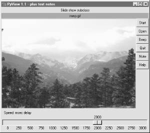
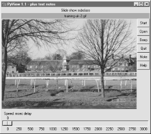
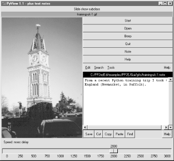
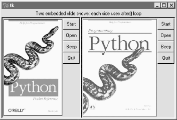

| I l@ve RuBoard |
|
9.5 PyView: An Image and Notes SlideshowA picture may be worth a thousand words, but it takes considerably fewer to display one with Python. The next program, PyView, implements a simple photo slideshow program in portable Python/Tkinter code. 9.5.1 Running PyViewPyView pulls together many of the topics we studied in the last chapter: it uses after events to sequence a slideshow, displays image objects in an automatically sized canvas, and so on. Its main window displays a photo on a canvas; users can either open and view a photo directly or start a slideshow mode that picks and displays a random photo from a directory, at regular intervals specified with a scale widget. By default, PyView slideshows show images in the book's image file directory (though the Open button allows you to load images in arbitrary directories). To view other sets of photos, either pass a directory name in as a first command-line argument or change the default directory name in the script itself. I can't show you a slideshow in action here, but I can show you the main window in general. Figure 9-13 shows the main PyView window's default display. Figure 9-13. PyView without notesThough it's not obvious as rendered in this book, the black-on-red label at the top gives the pathname of the photo file displayed. For a good time, move the slider at the bottom all the way over to "0" to specify no delay between photo changes, and click Start to begin a very fast slideshow. If your computer is at least as fast as mine, photos flip by much too fast to be useful for anything but subliminal advertising. Slideshow photos are loaded on startup to retain references to them (remember, you must hold on to image objects). But the speed with which large GIFs can be thrown up in a window in Python is impressive, if not downright exhilarating. The GUI's Start button changes to a Stop button during a slideshow (its text attribute is reset with the widget config method). Figure 9-14 shows the scene after pressing Stop at an opportune moment. Figure 9-14. PyView after stopping a slideshowIn addition, each photo can have an associated "notes" text file which is automatically opened along with the image. You can use this feature to record basic information about the photo. Press the Note button to open an additional set of widgets that let you view and change the note file associated with the currently displayed photo. This additional set of widgets should look familiar -- the PyEdit text editor of the previous section is attached to PyView to serve as a display and editing widget for photo notes. Figure 9-15 shows PyView with the attached PyEdit note-editing component opened. Figure 9-15. PyView with notesThis makes for a very big window, usually best view maximized (taking up the entire screen). The main thing to notice, though, is the lower right corner of this display above the scale -- it's simply an attached PyEdit object, running the very same code listed in the prior section. Because PyEdit is implemented as a GUI class, it can be reused like this in any GUI that needs a text editing interface. When embedded like this, PyEdit's menus are based on a frame (it doesn't own the window at large), text content is stored and fetched directly, and some stand-alone options are omitted (e.g, the File pull-down is gone). The note file viewer only appears if you press the Note button, and it is erased if you press it again; PyView uses widget pack and pack_forget methods introduced at the end of the last chapter to show and hide the note viewer frame. The window automatically expands to accommodate the note viewer when it is packed and displayed. It is also possible to open the note file in a PyEdit pop-up window, but PyView embeds the editor to retain a direct visual association. Watch for PyEdit to show up embedded within another GUI like this when we meet PyMail in Chapter 11. A caveat here: out of the box, PyView supports as many photo formats as Tkinter's PhotoImage object does; that's why it looks for GIF files by default. You can improve this by installing the PIL extension to view JPEGs (and many others). But because PIL is an optional extension today, it's not incorporated into this PyView release. See the end of Chapter 7 for more on PIL and image formats. 9.5.2 PyView Source CodeBecause the PyView program was implemented in stages, you need to study the union of two files and classes to understand how it truly works. One file implements a class that provides core slideshow functionality; the other implements a class the extends the original class, to add additional features on top of the core behavior. Let's start with the extension class: Example 9-16 adds a set of features to an imported slideshow base class -- note editing, a delay scale and file label, etc. This is the file that is actually run to start PyView. Example 9-16. PP2E\Gui\SlideShow\slideShowPlus.py###################################################################
# SlideShowPlus: add note files with an attached PyEdit object,
# a scale for setting the slideshow delay interval, and a label
# that gives the name of the image file currently being displayed;
###################################################################
import os, string
from Tkinter import *
from PP2E.Gui.TextEditor.textEditor import *
from slideShow import SlideShow
#from slideShow_threads import SlideShow
class SlideShowPlus(SlideShow):
def __init__(self, parent, picdir, editclass, msecs=2000):
self.msecs = msecs
self.editclass = editclass
SlideShow.__init__(self, parent=parent, picdir=picdir, msecs=msecs)
def makeWidgets(self):
self.name = Label(self, text='None', bg='red', relief=RIDGE)
self.name.pack(fill=X)
SlideShow.makeWidgets(self)
Button(self, text='Note', command=self.onNote).pack(fill=X)
Button(self, text='Help', command=self.onHelp).pack(fill=X)
s = Scale(label='Speed: msec delay', command=self.onScale,
from_=0, to=3000, resolution=50, showvalue=YES,
length=400, tickinterval=250, orient='horizontal')
s.pack(side=BOTTOM, fill=X)
s.set(self.msecs)
if self.editclass == TextEditorMain: # make editor now
self.editor = self.editclass(self.master) # need root for menu
else:
self.editor = self.editclass(self) # embedded or popup
self.editor.pack_forget( ) # hide editor initially
self.editorUp = self.image = None
def onStart(self):
SlideShow.onStart(self)
self.config(cursor='watch')
def onStop(self):
SlideShow.onStop(self)
self.config(cursor='hand2')
def onOpen(self):
SlideShow.onOpen(self)
if self.image:
self.name.config(text=os.path.split(self.image[0])[1])
self.config(cursor='crosshair')
self.switchNote( )
def quit(self):
self.saveNote( )
SlideShow.quit(self)
def drawNext(self):
SlideShow.drawNext(self)
if self.image:
self.name.config(text=os.path.split(self.image[0])[1])
self.loadNote( )
def onScale(self, value):
self.msecs = string.atoi(value)
def onNote(self):
if self.editorUp: # if editor already open
#self.saveNote( ) # save text, hide editor
self.editor.pack_forget( )
self.editorUp = 0
else:
self.editor.pack(side=TOP) # else unhide/pack editor
self.editorUp = 1 # and load image note text
self.loadNote( )
def switchNote(self):
if self.editorUp:
self.saveNote( ) # save current image's note
self.loadNote( ) # load note for new image
def saveNote(self):
if self.editorUp:
currfile = self.editor.getFileName() # or self.editor.onSave( )
currtext = self.editor.getAllText( ) # but text may be empty
if currfile and currtext:
try:
open(currfile, 'w').write(currtext)
except:
pass # this may be normal if run off cd
def loadNote(self):
if self.image and self.editorUp:
root, ext = os.path.splitext(self.image[0])
notefile = root + '.note'
self.editor.setFileName(notefile)
try:
self.editor.setAllText(open(notefile).read( ))
except:
self.editor.clearAllText( )
def onHelp(self):
showinfo('About PyView',
'PyView version 1.1\nJuly, 1999\n'
'An image slide show\nProgramming Python 2E')
if __name__ == '__main__':
import sys
picdir = '../gifs'
if len(sys.argv) >= 2:
picdir = sys.argv[1]
editstyle = TextEditorComponentMinimal
if len(sys.argv) == 3:
try:
editstyle = [TextEditorMain,
TextEditorMainPopup,
TextEditorComponent,
TextEditorComponentMinimal][string.atoi(sys.argv[2])]
except: pass
root = Tk( )
root.title('PyView 1.1 - plus text notes')
Label(root, text="Slide show subclass").pack( )
SlideShowPlus(parent=root, picdir=picdir, editclass=editstyle)
root.mainloop( )
The core functionality extended by SlideShowPlus lives in Example 9-17. This was the initial slideshow implementation; it opens images, displays photos, and cycles through a slideshow. You can run it by itself, but you won't get advanced features like notes and sliders added by the SlideShowPlus subclass. Example 9-17. PP2E\Gui\SlideShow\slideShow.py########################################################################
# SlideShow: a simple photo image slideshow in Python/Tkinter;
# the base feature set coded here can be extended in subclasses;
########################################################################
from Tkinter import *
from glob import glob
from tkMessageBox import askyesno
from tkFileDialog import askopenfilename
import random
Width, Height = 450, 450
imageTypes = [('Gif files', '.gif'), # for file open dialog
('Ppm files', '.ppm'), # plus jpg with a Tk patch,
('Pgm files', '.pgm'), # plus bitmaps with BitmapImage
('All files', '*')]
class SlideShow(Frame):
def __init__(self, parent=None, picdir='.', msecs=3000, **args):
Frame.__init__(self, parent, args)
self.makeWidgets( )
self.pack(expand=YES, fill=BOTH)
self.opens = picdir
files = []
for label, ext in imageTypes[:-1]:
files = files + glob('%s/*%s' % (picdir, ext))
self.images = map(lambda x: (x, PhotoImage(file=x)), files)
self.msecs = msecs
self.beep = 1
self.drawn = None
def makeWidgets(self):
self.canvas = Canvas(self, bg='white', height=Height, width=Width)
self.canvas.pack(side=LEFT, fill=BOTH, expand=YES)
self.onoff = Button(self, text='Start', command=self.onStart)
self.onoff.pack(fill=X)
Button(self, text='Open', command=self.onOpen).pack(fill=X)
Button(self, text='Beep', command=self.onBeep).pack(fill=X)
Button(self, text='Quit', command=self.onQuit).pack(fill=X)
def onStart(self):
self.loop = 1
self.onoff.config(text='Stop', command=self.onStop)
self.canvas.config(height=Height, width=Width)
self.onTimer( )
def onStop(self):
self.loop = 0
self.onoff.config(text='Start', command=self.onStart)
def onOpen(self):
self.onStop( )
name = askopenfilename(initialdir=self.opens, filetypes=imageTypes)
if name:
if self.drawn: self.canvas.delete(self.drawn)
img = PhotoImage(file=name)
self.canvas.config(height=img.height(), width=img.width( ))
self.drawn = self.canvas.create_image(2, 2, image=img, anchor=NW)
self.image = name, img
def onQuit(self):
self.onStop( )
self.update( )
if askyesno('PyView', 'Really quit now?'):
self.quit( )
def onBeep(self):
self.beep = self.beep ^ 1
def onTimer(self):
if self.loop:
self.drawNext( )
self.after(self.msecs, self.onTimer)
def drawNext(self):
if self.drawn: self.canvas.delete(self.drawn)
name, img = random.choice(self.images)
self.drawn = self.canvas.create_image(2, 2, image=img, anchor=NW)
self.image = name, img
if self.beep: self.bell( )
self.canvas.update( )
if __name__ == '__main__':
import sys
if len(sys.argv) == 2:
picdir = sys.argv[1]
else:
picdir = '../gifs'
root = Tk( )
root.title('PyView 1.0')
root.iconname('PyView')
Label(root, text="Python Slide Show Viewer").pack( )
SlideShow(root, picdir=picdir, bd=3, relief=SUNKEN)
root.mainloop( )
To give you a better idea of what this core base class implements, Figure 9-16 shows what it looks like if run by itself (actually, two copies run by themselves) by a script called slideShow_frames, which is on this book's CD. Figure 9-16. Two attached SlideShow objectsThe simple slideShow_frames scripts attach two instances of SlideShow to a single window -- a feat possible only because state information is recorded in class instance variables, not globals. The slideShow_toplevels script also on the CD attaches two SlideShows to two top-level pop-up windows instead. In both cases, the slideshows run independently, but are based on after events fired from the same single event loop in a single process. |
| I l@ve RuBoard |
|